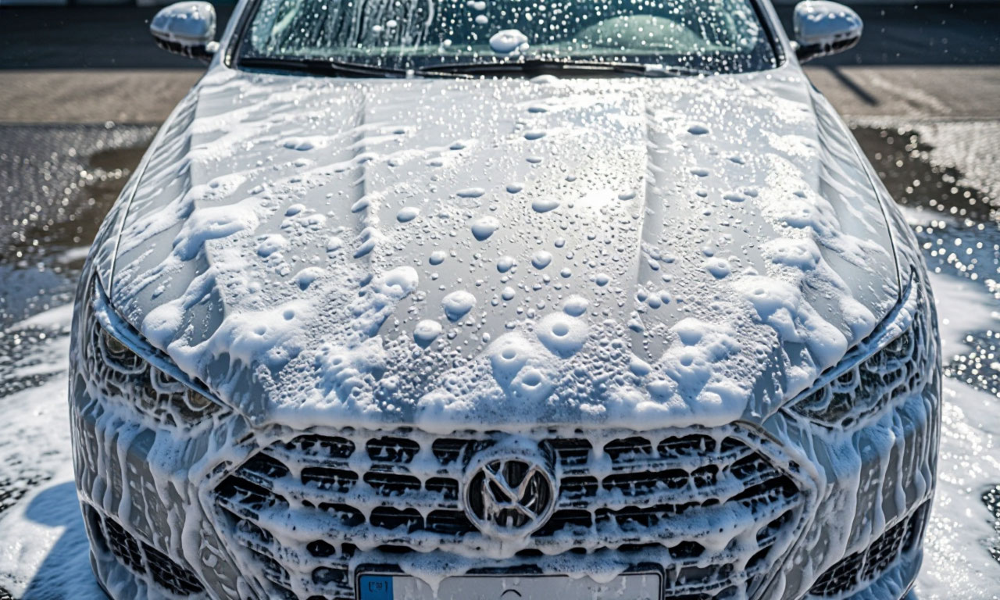

Автоматические щетки на мойках самообслуживания — враг лака. Они оставляют микроцарапины («паутинку»), которые видны на солнце. Правильная мойка — ручная и бесконтактная.
Не давайте машине высохнуть на солнце — останутся пятна от воды. Используйте специальную замшу или микрофибру для сушки.
Уход за кузовом продлевает жизнь ЛКП и сохраняет товарный вид авто для будущей продажи.
Посчитать экономию на уходе →